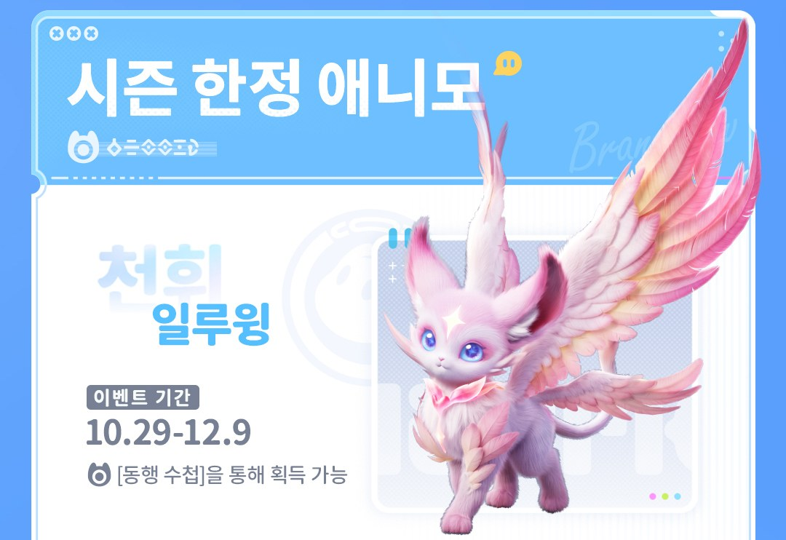
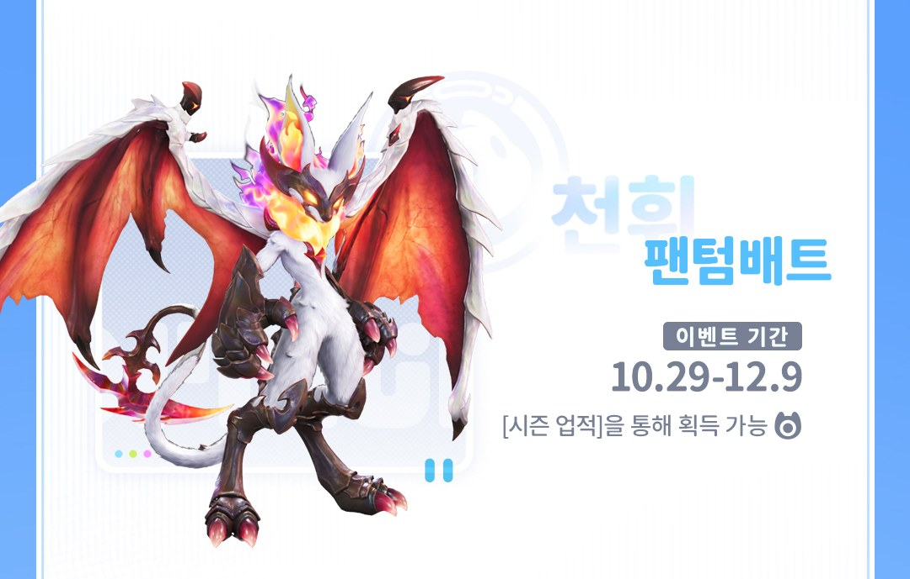

애니모 천휘 일루윙 팬텀배트 얻는 법, 동행 수첩·시즌 업적
천휘 애니모를 모으고 계신 분이라면 10월 29일 업데이트 소식에서 이벤트 한정 두 마리가 눈에 들어오셨을 텐데요, 하나는 동행 수첩에서, 하나는 시즌 업적에서 받는 구조라 경로부터 갈리더라고요. 기간도 12월 9일까지로 정해져 있어서 놓치면 곤란하겠다 싶어 두 경로를 한 번에 묶어봤습니다.
천휘 일루윙과 팬텀배트, 어디서 얻나요
천휘 일루윙은 동행 수첩의 프리미엄 보상이고, 천휘 팬텀배트는 시즌 업적 보상이며, 둘 다 10월 29일(목)부터 12월 9일(수)까지 42일 동안만 열려요. 공식 사이트 공지 그림에도 같은 기간과 경로가 적혀 있어요.

천휘 일루윙이 동행 수첩으로 열린다는 공식 안내 그림이에요.
이미지: 애니모 공식 공지 100222
| 경로 | 얻는 것 | 기간·조건 |
|---|---|---|
| 동행 수첩 프리미엄 | 샤이닝 스타 천휘 일루윙 알 1개 | 10/29~12/9 · 프리미엄 활성화 |
| 동행 수첩 기본(무료) | 일루윙 알 1개(천휘 표기 없음) | 10/29~12/9 · 수첩 레벨 진행 |
| 시즌 업적 | 천휘 팬텀배트 | 10/29~12/9 · 업적 조건 미공지 |
| 홈 15·18레벨 | 신비한 천휘 알 | 다른 경로, 홈 레벨 보상 |
| 풍요로운 지맥(필드 출몰·별개 경로) | 천휘 코인포켓, 로열비, 서지윙, 리벨라, 카니발 | 11/2부터 주마다 교체, 카니발은 11/30~12/6 |
이번 한정 경로는 위쪽 세 줄이에요. 시즌 「S1 바람 따라 출발·하」가 열리면서 동행 수첩, 시즌 업적, 메달 스탬프 상점이 새 단계로 시작하거든요. 아래 두 줄은 별개 경로예요. 홈 레벨 보상은 상시고, 풍요로운 지맥은 필드에서 만나는 주간 천휘 출몰 일정이라 플로리안(9/28~10/4)과 모터터(10/5~10/11) 주차는 이미 끝났어요. 공식 그림 기준으로 11월 2일부터 코인포켓, 로열비, 서지윙, 리벨라 순으로 바뀌고 11월 30일 주에 카니발이 나와요.
동행 수첩은 기본·프리미엄·컬렉션 3버전이에요
동행 수첩은 레벨이 오를수록 보상이 열리는 패스형 콘텐츠이고, 천휘 일루윙 알은 프리미엄 버전 보상에 들어 있어요. 프리미엄과 컬렉션은 따로 활성화해야 열려요.
| 버전 | 주요 보상 |
|---|---|
| 기본(무료) | 일루윙 알 1, 랜덤 샤이닝 스타 애니모 알 1, 지맥 정수, 스파클 결정체, 대량 육성재료 |
| 프리미엄 | 샤이닝 스타 어빌리티 천휘 일루윙 알 1, 일루 소울 1, 스파클 애니팟 2, 휘석 680, 꿈결 그림자 2, 애니모 박스 최대 수량 +5 |
| 컬렉션 | 프리미엄 보상에 더해 애니모 박스 +10, 스파클 애니팟 1, 한정 프로필 프레임, 한정 액세서리, 휘석 200, 에너지 배터리 5, 수첩 레벨 +10 즉시 획득 |
샤이닝 스타는 선천 어빌리티 평가 네 등급 가운데 가장 높은 등급이라, 프리미엄 쪽 알에는 이 최고 등급 어빌리티가 붙어 있다고 공지돼 있어요. 기본 보상은 그냥 일루윙 알이고, 천휘 표기는 프리미엄 쪽에만 붙어 있어요. 컬렉션은 수첩 레벨 +10이 바로 들어와서 그만큼 앞선 자리에서 시작하고요.
공식 미공지 항목이에요. 10월 29일 업데이트 후 동행 수첩 화면에서 직접 확인해 보세요.
동행 수첩 레벨은 이렇게 올려요
수첩 경험치는 주간 퀘스트, 시즌 퀘스트, 아카데미 가이드의 일일 활약도에서 얻고, 주간 경험치에는 상한이 없어요. 챙길 건 아래 다섯 가지가 전부예요.
- 주간 퀘스트는 매주 월요일 04:00에 갱신되고 진행도도 초기화돼요
- 시즌 퀘스트는 순차적으로 추가되고 퀘스트마다 1회만 해요
- 아카데미 가이드의 일일 활약도로도 경험치가 들어와요
- 모든 퀘스트는 수첩이 끝나면 같이 끝나서, 월요일 갱신 전에 남은 주간 퀘스트를 털어두는 게 좋아요
- Lv.100 이후는 반복 보상 모드로 바뀌고 최대 레벨은 1,000이에요
10월 17일 패치노트에서 10월 19일 04:00부터 시작한다고 알린 동행 수첩 EXP 보너스가 있었는데요, 레벨 70 미만일 때 경험치에 추가 배율이 붙는 방식이에요. 이번 새 단계에도 적용되는지는 아직 공지되지 않았어요.
천휘 일루윙만 보고 간다면 프리미엄 활성화부터 정하고 시작하는 쪽이 낫습니다. 천휘 표기가 프리미엄에만 붙어 있으니 공지 기준으로는 기본 보상에 천휘 알이 따로 적혀 있지 않아요.
일루윙은 바람 원소 딜러로 소개된 애니모이고, 동행 수첩으로 기본 형태와 천휘 형태를 모두 얻을 수 있어요. 적이 자기 움직임을 따라 이동하게 만들어 제어하고, 좁은 범위에 함정을 깔아 지속 피해를 주는 스타일이에요. 영문명은 Hypnyto이고, 프리미엄 보상의 일루 소울은 일루윙 진화 아이템이에요.
공식 위키 미등재 항목이에요. 알을 부화한 뒤 도감·스킬 화면에서 확인해 보세요.
천휘 팬텀배트는 시즌 업적, 스팀 공지에는 디텍배트로 적혀 있어요
천휘 팬텀배트는 시즌 업적으로 받는 전용 애니모이고, 공식 사이트 그림은 팬텀배트, 스팀 한국어 공지 본문은 천휘 디텍배트로 표기해요. 스팀 쪽 설명은 어둠 원소 브레이커이고, 적을 끌어모으면서 흡혈로 딜링하는 역할이에요. 공지 원문에는 메달 스탬프 상점에 천휘 디텍배트 테마 액세서리 싹뚜기 낫도 올라온다고 적혀 있어요.

천휘 팬텀배트가 시즌 업적으로 열린다는 공식 안내 그림이에요.
이미지: 애니모 공식 공지 100222
스팀 공지에는 알 쟁탈전 팀 모드와 도전 퀘스트를 마치면 업적 보상을 받는 시즌 도전 콘텐츠도 소개돼 있어요. 어느 업적에 팬텀배트가 걸렸는지는 모르지만, 업적 화면에서는 이 두 콘텐츠 쪽을 먼저 열어보시는 게 좋아요.
스팀 공지는 어둠·브레이커, 위키의 기본형 디텍배트는 바람·서포터로 갈려요. 10월 29일 업데이트 후 시즌 업적 화면과 도감에서 확인해 보세요.
놓치면 안 되는 건 종료 시각과 복각 예고예요
두 경로는 12월 9일 23:59(UTC+0)에 닫히고, 한국 시간으로는 12월 10일 오전 8시 59분 무렵까지 열려 있어요. 12월 9일 자정이 지나도 아침까지는 여유가 있는 셈인데요, 이 시각은 환산한 추정값이에요.
- 참여 조건은 캐릭터가 학생Ⅰ로 승급한 상태예요
- 10월 29일 점검은 APAC 기준 07:00~15:00(UTC+8)이라 한국 시간으로는 오전 8시~오후 4시예요
- 메달 스탬프 상점도 같은 날 재고가 갱신되는데요, 시즌이 바뀌면 바람맞이 메달 스탬프는 크레딧으로 자동 전환돼요
- 수첩과 업적 모두 이번 회차가 끝나면 닫히니, 프리미엄 활성화 여부는 일찍 정할수록 퀘스트 경험치를 덜 놓쳐요
- 이번 수첩의 천휘 애니모 알은 추후 S3 시즌 홈 콘텐츠에서 다시 얻을 수 있다고 예고됐어요
자주 묻는 질문
Q. 프리미엄이나 컬렉션을 친구에게 선물할 수 있나요?
친밀도 조건을 채운 친구 가운데 아직 해제하지 않은 친구에게 활성화 아이템을 1개 선물할 수 있어요.
Q. 알 쟁탈전에서도 천휘 알이 나오나요?
새로 생기는 3팀 대전 모드에서 이긴 팀만 받는 보상인데요, 낮은 확률로 천휘 알이 나온다고 적혀 있어요. 참여하려면 캐릭터 레벨 50과 알 쟁탈전 랭크 「알 찾는 루키」가 필요해서, 천휘 일루윙을 콕 집어 노리는 방법은 아니에요.
Q. 황금 알 도전을 끝내면 팬텀배트를 받나요?
황금 알 도전의 보상은 이번 시즌 수집품이 든 바람 따라 출발 수집품 랜덤 박스예요. 팬텀배트 획득 조건으로 공지된 내용은 아니에요.
Q. 시즌 메달 스탬프는 시즌이 바뀌면 어떻게 되나요?
시즌 메달 스탬프는 드림 메달 스탬프로 바뀌고, 바람맞이 메달 스탬프는 1대 2000 비율로 크레딧에 자동 전환된다고 안내돼 있어요.
저라면 29일 점검이 끝나자마자 수첩 보상 줄부터 열어서 천휘 알이 몇 레벨에 붙어 있는지 볼 것 같아요~ 팬텀배트 업적 조건이 풀리면 다시 정리해서 들고 올게요ㅎㅎ
✔ 애니모 같이 보기 좋은 내용
· 애니모 달빛이슬 무 보름달 고추 변이 확률 증가, 홈 시즌 UP 단계 보름달 포인트 정리
· 애니모 신비한 천휘 알 얻는 법, 홈 15레벨 18레벨 캠핑카 레벨업 조건 정리
· 애니모 노브랜드 버거 콜라보 버거팩 가격 탄멍멍 11,200원 수줍달 9,900원, 증정품 키링 5종 포토카드 10종
참고한 곳
· 애니모 공식 뉴스(10월 29일 업데이트 안내, 100222)
· 애니모 스팀 공지(업데이트 미리보기 및 서버 점검 사전 안내)